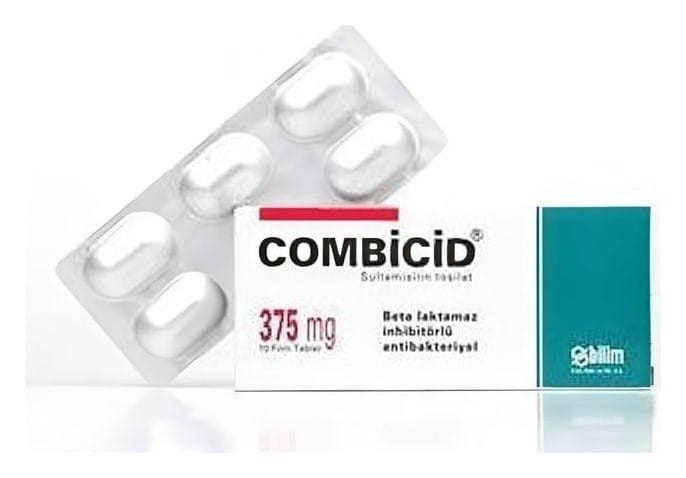

Combicid 375 mg Film Tablet, 10 Tablet

Ne için kullanılır
KT · Bölüm 12. COMBİCİD'i kullanmadan önce dikkat edilmesi gerekenler (Ss) 3. COMBİCİD nasıl kullanılır? 4. Olası yan etkiler nelerdir? 5. COMBİCİD'in saklanması Başlıkları yer almaktadır. CT375mg-140311P12 Sayfa 1
1. COMBİCİD nedir ve niçin kullanılır? COMBİCİD, ağızdan alınan, 147 mg sulbaktam ve 220 mg ampisilin içeren bir antibiyotiktir. Beyaz beyazımsı bir yüzü C harfi baskılı diğer yüzü düz film kaplı oblong tabletlerdir. COMBİCİD alüminyum folyo blisterde 10 tablet içeren kutular ile kullanıma sunulmaktadır. COMBİCİD, aşağıdaki durumlarda kullanılmaktadır: COMBİCİD, belirli mikropların neden olduğu sinüs iltihabı, orta kulak iltihabı, bademcik iltihabı dahil olmak üzere üst solunum yolu enfeksiyonları; akciğer iltihabı, bronşit dahil olmak üzere alt solunum yolu enfeksiyonları; idrar yolu ve böbrek enfeksiyonları; deri ve yumuşak doku enfeksiyonları ve bel soğukluğu enfeksiyonlarının tedavisinde kullanılmaktadır.